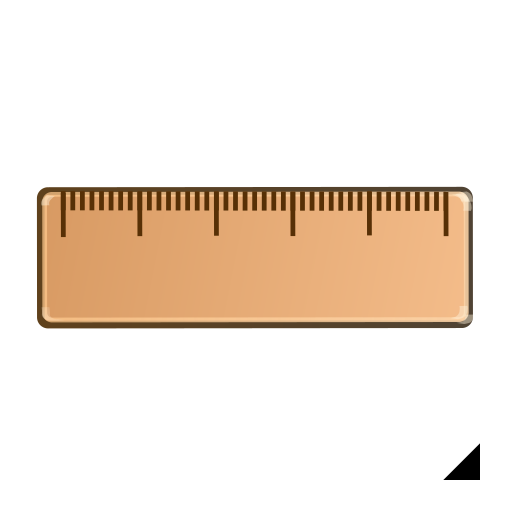

Winkel
Werkzeugleiste / Symbol:

Menü:
Info - Winkel
Tastenkürzel:
I, A
Kommandos:
infoangle | ia
Beschreibung:
Diese Werkzeug misst den Winkel zwischen zwei Linien.
Vorgehensweise:
Bestimmen Sie die erste Linie.
Bestimmen Sie die zweite Linie.
Der gemessene Winkel wird in Graden in der Kommandozeile ausgegeben.